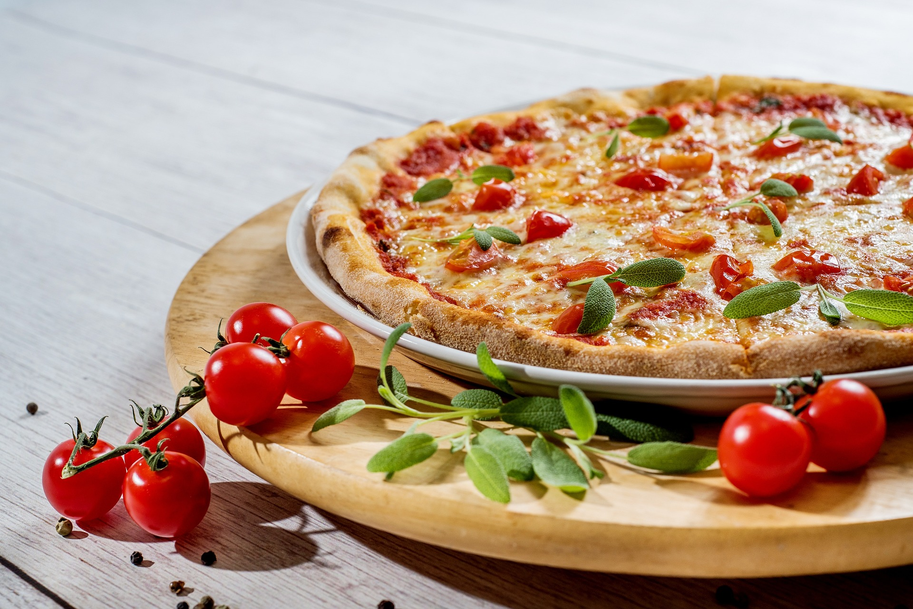

Mes Projets
Outil De Traduction Netflix
Extension Web
Gestionnaire De Ticket De Caisse
Application Android
Site Pour Une Pizzeria
Site Web
Mon Portfolio
Site Web
Attiré depuis tout petit par l'informatique, ce qui a concrétisé mon envie de me lancer dans l'informatique était de réaliser mes propres projets. J'ai donc commencé mon aventure au lycée en terminale avec un site que j'ai réalisé pour une pizzeria. Depuis mon envie d'évoluer et d'apprendre ne m'a jamais quittée et continue de me mener vers d'autres technologies. Mettre en pratique ce que j'apprends à travers mes projets personnels est la façon la plus rapide que j'ai trouvé pour progresser tout en m'amusant.
2021
2024
Actuellement en deuxième année de BUT j'ai décidé de prendre la spécialité développement d'Application
2018
2021
Baccalauréat mention bien avec option informatique et développement durable
2020
2018
Actuellement en deuxième année de BUT j'ai décidé de prendre la spécialité développement d'Application
l'informatique n'est pas ma seule passion, j'aime beaucoup le badminton que je pratique depuis 2 ans et le tennis que j'ai pratiqué pendant 9 ans
La musique m'inspire quotidiennement et est pour moi un trés bonne outil de motivation
La badminton, le tennis, le squash le sport me permet de me défouler
J'aime découvrir comment marche ce qu'il y a autour de moi. Découvrir et apprendre de nouvelle chose me donne un sentiment de satisfaction
Voyager est l'une de mes motivation principale. Voir du paysage découvrir d'autre culture me vider la tête et me dépayser
